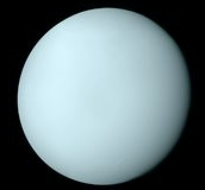
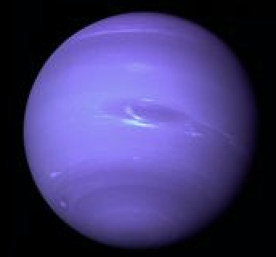
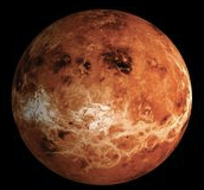
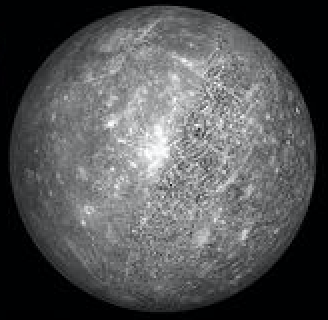
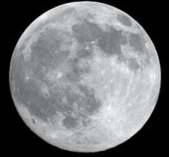
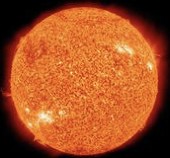
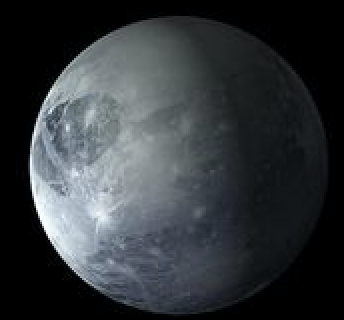
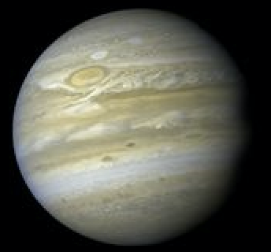
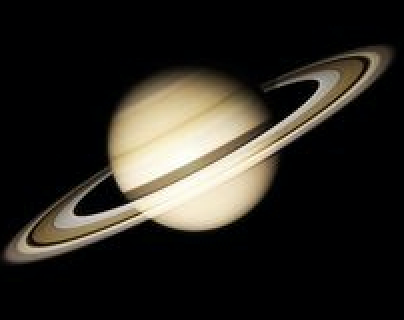

Scorpio
October 24–November 21
Choose Your Zodiac Sign

Aquarius
Aquarius are shy and quiet, but on the other hand they can be eccentric and energetic. However, in both cases, they are deep thinkers and highly intellectual people who love helping others. They are able to see without prejudice, on both sides, which makes them people who can easily solve problems.
Back

Pisces
Pisces are very friendly, so they often find themselves in a company of very different people. Pisces are selfless, they are always willing to help others, without hoping to get anything back.Pisces is characterized by empathy and expressed emotional capacity.
Back
Aries
As the first sign in the zodiac, the presence of Aries always marks the beginning of something energetic and turbulent. They are continuously looking for dynamic, speed, and competition, always being the first in everything - from work to social gatherings. Thanks to its ruling planet Mars and the fact it belongs to the element of Fire, Aries is one of the most active zodiac signs. It is in their nature to take action, sometimes before they think about it well.
Back

Taurus
Practical and well-grounded, Taurus is the sign that harvests the fruits of labor. They feel the need to always be surrounded by love and beauty, turned to the material world, hedonism, and physical pleasures. People born with their Sun in Taurus are sensual and tactile, considering touch and taste the most important of all senses. Stable and conservative, this is one of the most reliable signs of the zodiac, ready to endure and stick to their choices until they reach the point of personal satisfaction.
Back

Gemini
Expressive and quick-witted, Gemini represents two different personalities in one and you will never be sure which one you will face. They are sociable, communicative and ready for fun, with a tendency to suddenly get serious, thoughtful and restless. They are fascinated with the world itself, extremely curious, with a constant feeling that there is not enough time to experience everything they want to see.
Back

Cancer
Deeply intuitive and sentimental, Cancer can be one of the most challenging zodiac signs to get to know. They are very emotional and sensitive, and care deeply about matters of the family and their home. Cancer is sympathetic and attached to people they keep close. Those born with their Sun in Cancer are very loyal and able to empathize with other people's pain and suffering.
Back

Leo
Leos are natural born leaders. They are dramatic, creative, self-confident, dominant and extremely difficult to resist, able to achieve anything they want to in any area of life they commit to. There is a specific strength to a Leo and their "king of the jungle" status. Leo often has many friends for they are generous and loyal. Self-confident and attractive, this is a Sun sign capable of uniting different groups of people and leading them as one towards a shared cause, and their healthy sense of humor makes collaboration with other people even easier.
Back
Virgo
Virgos are always paying attention to the smallest details and their deep sense of humanity makes them one of the most careful signs of the zodiac. Their methodical approach to life ensures that nothing is left to chance, and although they are often tender, their heart might be closed for the outer world. This is a sign often misunderstood, not because they lack the ability to express, but because they won’t accept their feelings as valid, true, or even relevant when opposed to reason.
Back
Libra
People born under the sign of Libra are peaceful, fair, and they hate being alone. Partnership is very important for them. These individuals are fascinated by balance and symmetry, they are in a constant chase for justice and equality, realizing through life that the only thing that should be truly important to themselves in their own inner core of personality. This is someone ready to do nearly anything to avoid conflict, keeping the peace whenever possible
Back

Scorpio
Scorpio are passionate and assertive people. They are determined and decisive, and will research until they find out the truth. Scorpio is a great leader, always aware of the situation and also features prominently in resourcefulness.
Back

Sagittarius
Curious and energetic, Sagittarius is one of the biggest travelers among all zodiac signs. Their open mind and philosophical view motivates them to wander around the world in search of the meaning of life. Sagittarius is extroverted, optimistic and enthusiastic, and likes changes. Sagittarius-born are able to transform their thoughts into concrete actions and they will do anything to achieve their goals.
Back

Capricorn
Capricorn is a sign that represents time and responsibility, and its representatives are traditional and often very serious by nature. These individuals possess an inner state of independence that enables significant progress both in their personal and professional lives. They are masters of self-control and have the ability to lead the way, make solid and realistic plans, and manage many people who work for them at any time. They will learn from their mistakes and get to the top based solely on their experience and expertise.
Back

Taurus
April 20–May 20